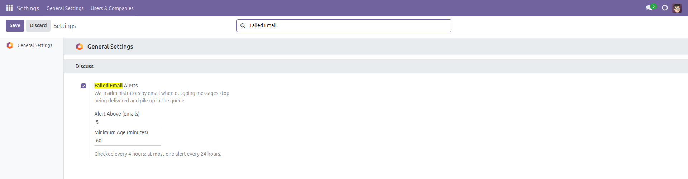
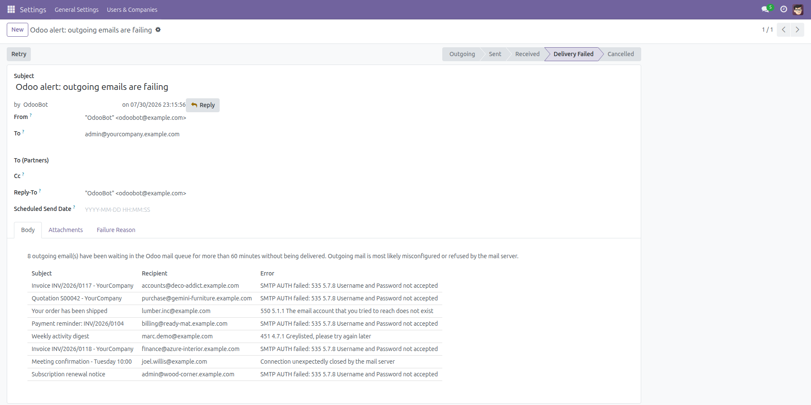
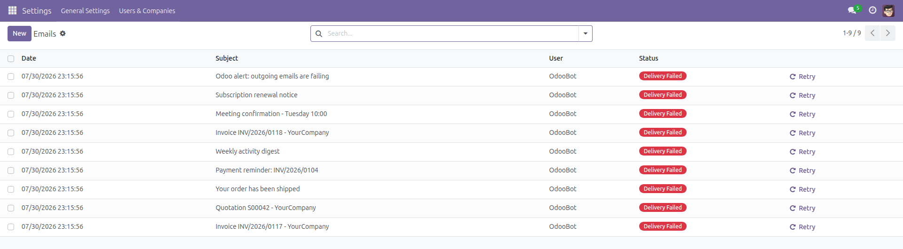

Failed Email Alerts
Know when Odoo stops delivering your mail.
When SMTP credentials expire, a relay starts rejecting recipients or the mail server goes
down, Odoo does not complain: it quietly parks every message in the outgoing queue in
Delivery Failed state. Nobody notices until a customer asks why the invoice never
arrived — often days later. This module watches the queue and
emails your administrators a summary of what is failing: subjects,
recipients and the first error the mail server returned.
Free and open source (LGPL-3), Odoo 14.0 through 19.0.
- Works on install — enabled by default: 5 stuck messages, older than 60 minutes, checked every 4 hours.
- Actionable summary — the 20 oldest stuck messages with subject, recipient and the exact SMTP error.
- Force-sent, never queued — the alert is delivered in-process, because the mail queue is exactly what is broken.
- No inbox flood — at most one alert every 24 hours, however long the outage lasts.
- Per-installation switch — one checkbox in General Settings, plus a configurable threshold and age window.
- Never feeds itself — alert messages are flagged and are never counted as evidence of a broken queue.
Screenshots

One switch in Settings → General Settings, with the alert threshold and the age window below it.

The alert administrators receive: how many messages are stuck, and for each one the subject, the recipient and the error returned by the mail server.

The queue the alert is about — Settings → Technical → Email → Emails. Without this module nothing tells you it looks like this.
Installation
- Open Apps, remove the default "Apps" filter if needed, and search for Failed Email Alerts.
- Click Install. Only standard modules (
base_setup, mail) are required — watching starts immediately.
Configuration
- Open Settings → General Settings and scroll to the Emails section (called Discuss on Odoo 14.0 – 17.0).
- Failed Email Alerts is on by default; untick it to silence the watchdog on this database.
- Alert Above (emails) — how many stuck messages are needed before an alert goes out (default 5, floor 1).
- Minimum Age (minutes) — messages queued more recently than this are normal traffic and are not counted (default 60, floor 5).
- Make sure every administrator who should be warned has an email address on their user record.
Usage
- The scheduled action "Email: alert on a stuck outgoing queue" runs every 4 hours and counts messages in Outgoing or Delivery Failed state older than the age window.
- Above the threshold, every user with Settings access and an email address receives one summary of the 20 oldest stuck messages.
- A further alert is not sent for another 24 hours, so a broken relay cannot turn into an inbox flood.
- Open Settings → Technical → Email → Emails to inspect and retry the queue once the mail server is fixed.
Version notes
Identical behavior on every supported series (14.0 – 19.0); only the settings-view markup and the ir.cron fields differ internally.
License: LGPL-3 · Source on GitHub · Issues and contributions welcome.